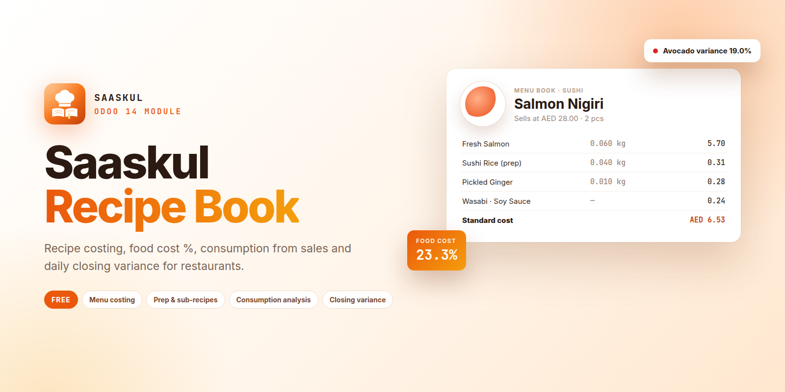
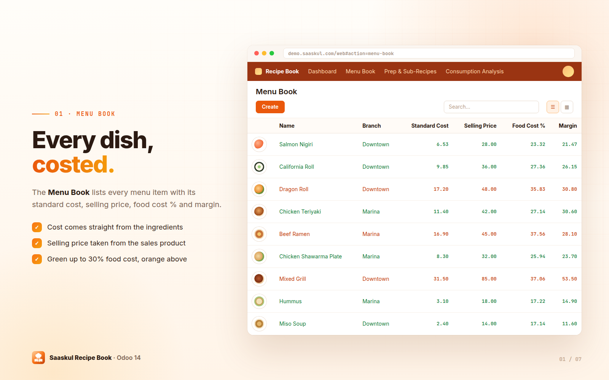
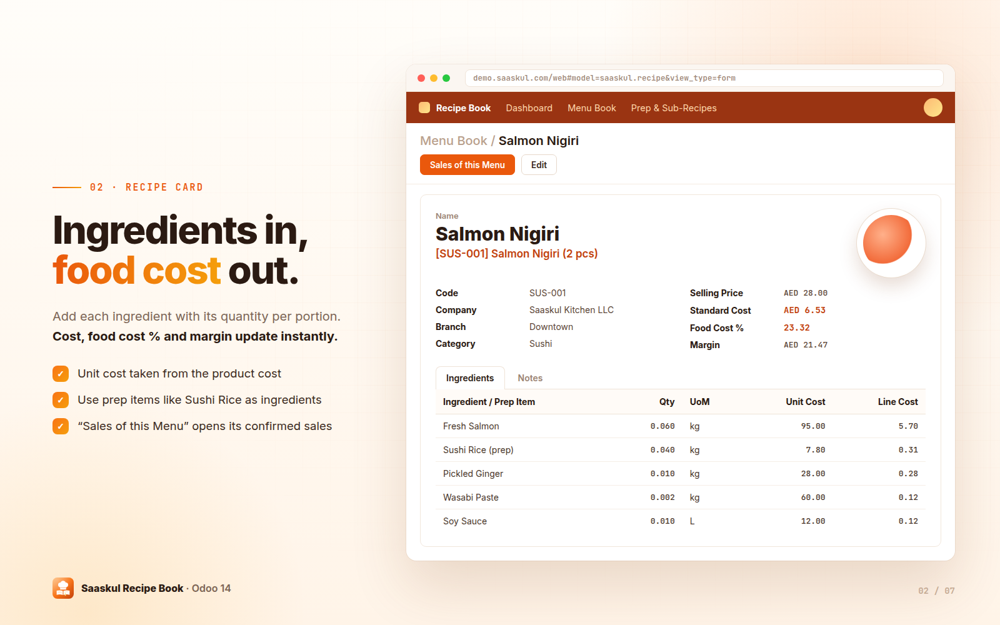
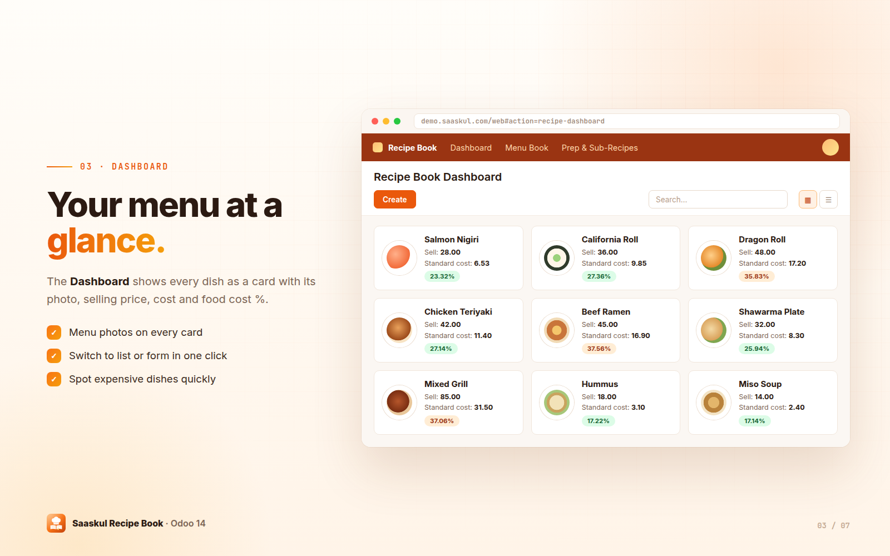
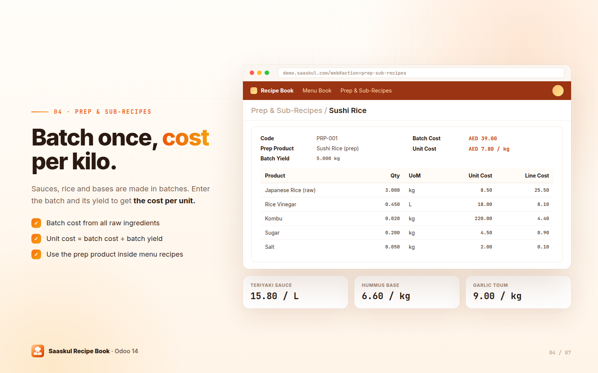
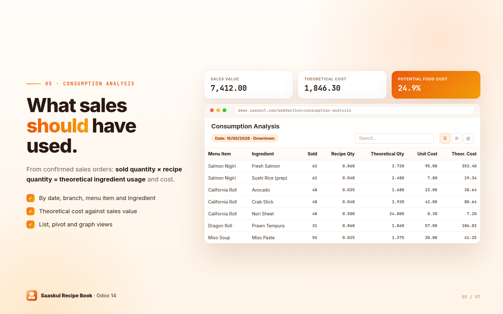
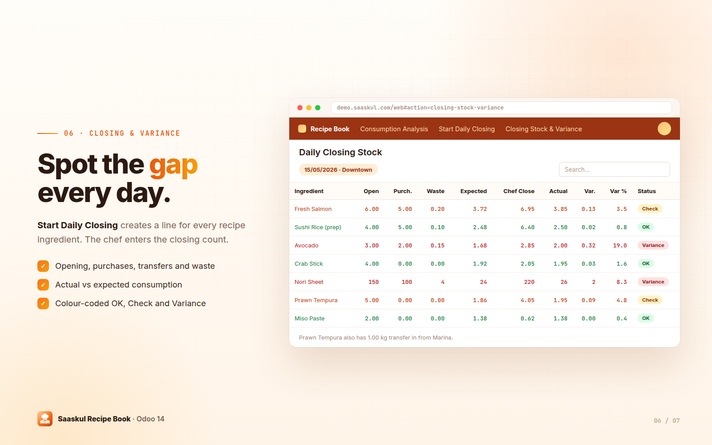
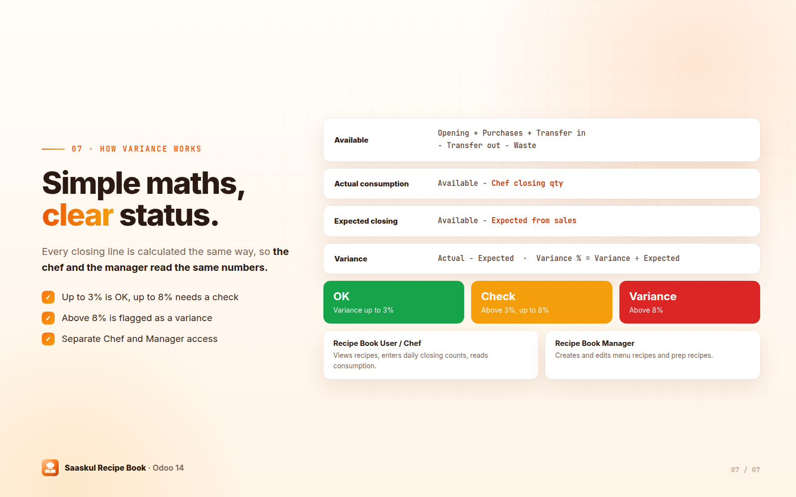

Know what every dish costs, what your sales should have used, and where your kitchen stock is going. Recipe costing, food cost %, consumption from sales and daily closing variance for restaurants.

Most kitchens only find out about lost stock at month end. Recipe Book links your menu, your sales and your chef's daily count, so the gap shows up the same day.
✗ Dish costs live in old spreadsheets
✗ Nobody knows the real food cost % per item
✗ Sales and kitchen stock are never compared
✗ Waste and over-portioning stay hidden
✓ Every dish costed from its ingredients
✓ Food cost % and margin on every menu item
✓ Theoretical usage calculated from confirmed sales
✓ Daily variance flagged as OK, Check or Variance
One recipe per menu item with standard cost, selling price, food cost % and margin.
Ingredients per portion with quantity, unit and cost. Totals update as you type.
Menu cards with photo, selling price, standard cost and food cost %.
Batch recipes for rice, sauces and bases with batch cost and cost per unit of yield.
Theoretical ingredient usage and cost from confirmed sales, in list, pivot and graph.
Chef enters the closing count. Variance is calculated and colour-coded per ingredient.
Each recipe is linked to the sales product you sell. The list shows standard cost, selling price, food cost % and margin for every dish, with branch and menu photo. Dishes up to 30% food cost show in green, dishes above 30% in orange.

Add each ingredient or prep item with its quantity per portion. The unit cost comes from the product cost, so the standard cost, food cost % and margin are always current. Set the code, branch and category (Sushi, Japanese, Arabic or Other), add a menu photo and notes, and press Sales of this Menu to see its confirmed sales lines.

The Recipe Book Dashboard shows every dish as a card with its photo, selling price, standard cost and food cost %. Switch to the list or open a recipe in one click.

Sushi rice, sauces and bases are cooked in batches. Enter the raw ingredients and the batch yield: Recipe Book calculates the batch cost and the cost per unit, for example AED 39.00 ÷ 5 kg = AED 7.80 per kg. Use the prep product inside your menu recipes.

For every confirmed sales order, Recipe Book multiplies the sold quantity by the recipe quantity to get the theoretical ingredient usage and its cost, next to the sales value and potential food cost %.

Start Daily Closing asks for the date and branch and creates a closing line for every ingredient used in your recipes. Fill in opening stock, purchases, transfers in and out, waste and the expected usage from sales, then the chef enters the closing count. Actual consumption, expected closing and variance are calculated on each line.


Create batch recipes for rice, sauces and bases.
Link each menu item to its sales product and add ingredients.
Confirmed sales feed the Consumption Analysis automatically.
Start Daily Closing, enter the chef's count and review the variance.
Need help setting up recipes or daily closings for your kitchen? The Saaskul team is happy to help.
info.cpabooks@gmail.com